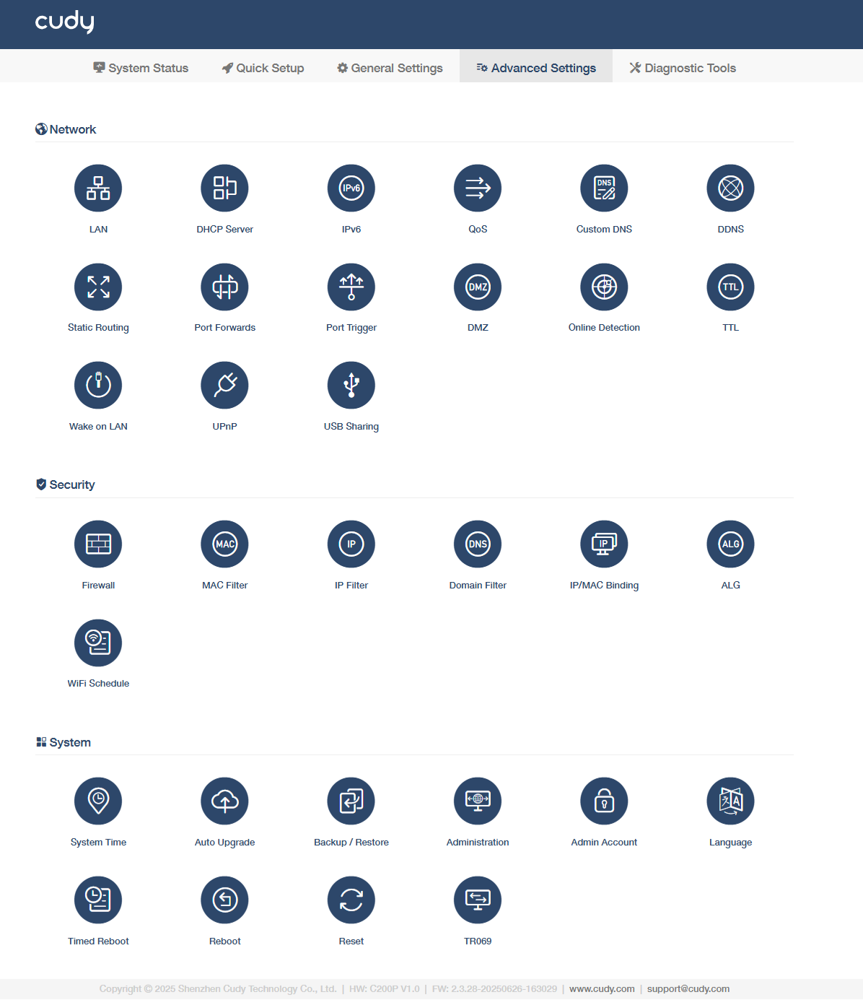
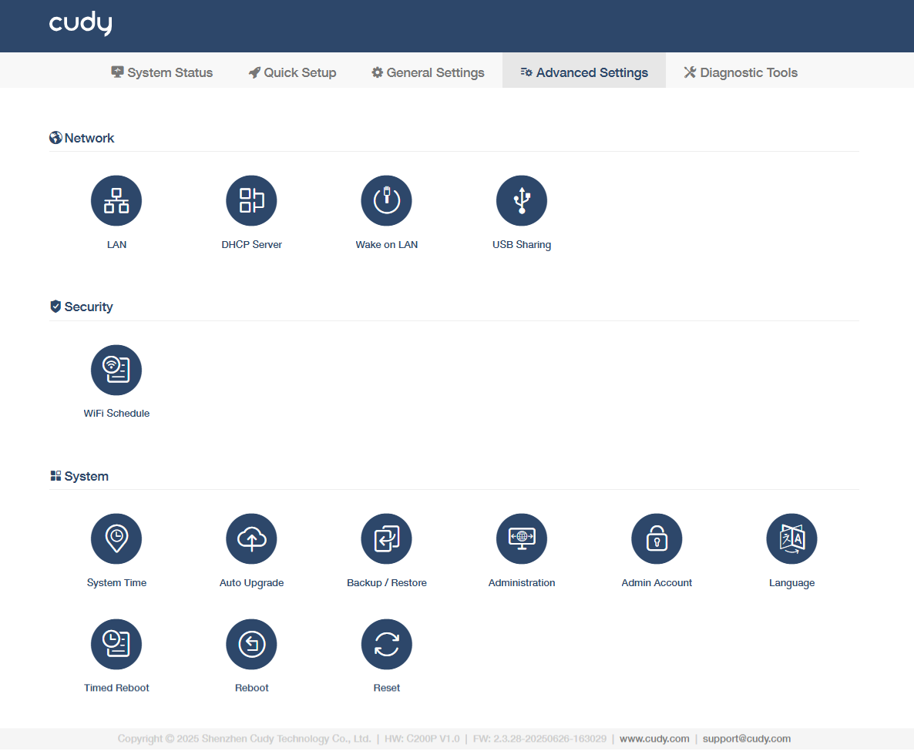

Network¶
Network section allows you to manage and configure a series of network features for the AP controller.
-
For Main Router and AP Controller mode

-
For AP Controller mode

{kind=link}
{kind=link}
LAN¶
The AP controller is preset with a default LAN IP 192.168.10.1, which you can use to log in to its web management page. The LAN IP address together with the Subnet Mask also defines the subnet that the connected devices are on. If the IP address conflicts with another device on your local network or your network requires a specific IP subnet, you can change it.

- Enter a new IP Address appropriate to your need.
- Set the Subnet Mask or keep it as default.
- Enable IP Routed Subnet as needed. If it is enabled, you need to enter the IP Address and Subnet Mask as well.
- Click Save & Apply.

- If you have set the Port Forwarding, DMZ or DHCP address reservation, and the new LAN IP address is not in the same subnet with the old one, then you should reconfigure these features.
- If in conflict with the WAN IP address, the LAN IP will automatically change into 10.1.1.1.
DHCP Server¶
DHCP Server is enabled by default and dynamically assigns TCP/lP parameters to client devices from the IP Address Pool. DO NOT disable DHCP server unless you have another DHCP server, or you want to manually assign the TCP/P parameters to every clients on the network.

To specify the IP address that the AP controller assigns, please take the steps below.
- Enable DHCP Server.
- Enter the starting IP address and the Limit number to create the IP address pool.
- (Optional) Enter the Preferred and Alternate DNS if your ISP provides.
- Set the Leasetime.
- Click Save & Apply.
If you want to reserve for a specified client device an IP address, which is assigned by the AP controller as a DHCP server, you may use the IP/MAC binding function.
IPv6¶
This is only available in Main Router and AP Controller mode.
IPv6 may not be supported in the current version of the firewall, VPN, block list, etc.Therefore, the IPv6 function can only be used for configuration on this interface. There are 7 types of IPv6 Internet connection, including Relay, Dynamic IP(SLAAC/DHCPv6), Static (Fixed lP), Passthrough, 464XLAT, MAP-E, and DS-Lite. Please choose the appropriate one and configure the parameters according to your ISP.
>>>> How to set up IPv6 connection
QoS¶
This is only available in Main Router and AP Controller mode.
QoS (Quality of Service) allows you to prioritize connection of specific devices for a set duration. Devices set as high priority will be allocated more bandwidth and so continue to run smoothly even when there is heavy traffic on the network. You can set the download and upload speed for each client device here. The value can be used to calculate WAN usage.
To set up QoS, please follow the steps below.

- Click Add to add entries.
- Select the MAC-Address and make a comment to specify the devices, and set its Download/Upload Speed.
- Click Save & Apply.
Custom DNS¶
This is only available in Main Router and AP Controller mode.
If you set custom DNS servers, any DNS name will be resolved through the DNS Servers set here instead of the one obtained from WAN.

-
Rebind protection: This function may cause private DNS lookup failure. Do not enable it if your network has a captive portal.
-
Override All Clients' DNS: If Enabled, your AP controller will bypass hard-coded DNS settings on all clients, such as Chrome cast, TV boxes, etc.
-
DNS Settings: Select a type of DNS settings.
- Default: Uses ISP-provided DNS. Fast but lacks privacy.
- DNS over TLS: Encrypts queries via TLS. Secure but may add 5-10ms latency.
- Cloudflare: Fast global Anycast (1.1.1.1) with TLS 1.3, ideal for low-latency IoT.
- Google: GCP-integrated (8.8.8.8), avoid in censored regions.
- Quad9: Threat-blocking (9.9.9.9), best for critical infrastructure.
- Custom: Use internal/enterprise DNS (e.g., 10.10.1.53:853) with certificate validation.
- Manual: Customize DNS, entering the preferred/alternate DNS.
DDNS¶
This is only available in Main Router and AP Controller mode.
Dynamic Domain Name Service (Dynamic DNS or DDNS) is a service used to map a domain name to the dynamic IP address of a network device. Most ISPs assign a dynamic IP address to the AP controller and you can use this IP address to access your AP controller remotely. However, the IP address can change from time to time and you don't know when it changes. In this case, you might apply the DDNS feature on the AP controller to allow you to access your AP controller and local servers (FTP, HTTP, etc.) using a domain name without checking and remembering the IP address.
DDNS would not work if the ISP assigns a private WAN IP address (e.g. 192.168.1.x) to the AP controller.

To set up DDNS, please follow the steps below.
- Enable DDNS.
- Select a DDNS Service Provider. It is recommended to select no-ip.com or dyn.com. If you don't have a DDNS account, you have to register first.
- Enter the Domain / Username / Password of your account.
- Domain: Custom hostname (e.g., yourname.ddns.net).
- Username/Password: Authentication for provider API.
- Set the Check Interval and Force Interval.
- Check Interval: Time between IP checks (default 10min).
- Force Interval: Mandatory update cycle (even if IP unchanged).
- Last Update: Displays timestamp of most recent successful sync.
- Click Save & Apply.
Static Routing¶
This is only available in Main Router and AP Controller mode.
It is a form of routing that is configured manually by a network administrator or a user by adding entries into a routing table. The manually-configured routing information guides the AP controller in forwarding data packets to the specific destination.
For example, I want my PC to surf the Internet through AP controller and visit my company's local network at the same time. Now I have a switch and Router B. I connect the devices as shown in the following figure so that the physical connection between my PC and my company's server is established.
To configure the static routing so that you can surf the Internet and visit my company's network at the same time, please follow the steps below.
{kind=link}
- Disable Router B's DHCP function. Change the AP controllers' LAN IP addresses to two different IP addresses on the same subnet.
- Log in to AP controller's management web page http://cudyac.net, and go to Advanced Settings -> Network -> Static Routing.
-
Click Add and then enter the parameters as required.

- Interface: Select the type of interface that sends out data packets to the gateway.
- WAN: Connect to external networks (ISP/MPLS) with NAT/firewall.
- LAN: Local device switching (VLAN-aware for OT segmentation).
- WISP: Wireless ISP client mode (bridge/route to upstream AP).
- 4G: Cellular failover/Primary WAN (AT&T FirstNet certified for critical infra).
- Target: Enter the Host-IP or Network IP address you want to assign to a static route. This IP address cannot be on the same subnet with the WAN IP or LAN IP of AP controller.
- Subnet Mask: It is required if the Target is a network. It determines the destination network with the destination IP address. If the destination is a single IP address, enter 255.255.255.255; otherwise, enter the subnet mask of the corresponding network IP.
- Gateway: Enter the IP address of the gateway device which the data packets will be sent to. This IP address must be on the same subnet with the AP controller's IP which sends out data.
- Interface: Select the type of interface that sends out data packets to the gateway.
-
Click Save & Apply.
Now you can open a web browser on your PC, enter the company server's IP address to visit the company network.
Port Forwards¶
This is only available in Main Router and AP Controller mode.
Port Forwards can be used to set up public services on your local network (such as HTTP, FTP, DNS, POP3/SMTP and Telnet), while keeping the local network safe from the other services that are still invisible on the Internet.
Different services use different service ports. Port 80 is used in HTTP service, port 21 in FTP service, port 25 in SMTP service and port 110 in POP3 service. Do verify the service port number before the configuration.
For example, I want to share my personal website I've built on the local network to my friends on the Internet. Say, my personal PC IP address is 192.168.10.100, connecting to the AP controller with WAN IP address 218.18.232.154. Please follow the step-by-step instructions to configure it.

- Assign a static IP address to your PC, for example 192.168.10.100.
- Log in to http://cudyac.net, and go to Advanced Settings -> Network -> Port Forwards.
-
Click Add and then enter the required parameters.
- Name: Give a name for the entry.
- Protocol: Select TCP+UDP if you are unsure of which protocol you are using.
- TCP: Usually used for web browsing, file transfers, and most client-server applications.
- UDP: Used for streaming services, online gaming, and other applications that require fast transmission of data.
- Interface: Select WAN or VPN according to the source of traffic you want to forward.
- External Port: Specify the port number that will receive traffic on the WAN or VPN interface.
- Internal IP Address: Enter the IP address of the device on your local network that should receive the forwarded traffic.
- Internal Port: Specify the port number on the internal device that will receive the forwarded traffic.
- Delete: Delete the entry as needed.
-
Click Save & Apply.
Now users on the Internet can enter http://WAN IP (in this example: http://218.18.232.154) to visit your personal website.
If you want to provide several services in a AP controller, please add multiple port forwarding rules.
- The WAN IP should be a public IP address. For the WAN IP is assigned dynamically by the ISP, it is recommended to apply and register a domain name for the WAN (How to set up a Dynamic DNS service account). Then users on the Internet can use http://domain name to visit the website.
- If you have changed the default External Port, you should use http://WAN IP:external port or http://domain name:external port to visit the website.
Port Trigger¶
This is only available in Main Router and AP Controller mode.
Port Trigger can specify a triggering port and its corresponding external ports. When a host on the local network initiates a connection to the triggering port, all the external ports will be opened for subsequent connections.
The AP controller can record the IP address of the host. When the data from the Internet return to the external ports, the AP controller can forward them to the corresponding host.
Port Triggering is mainly applied to online games, VoIPs, video players and common applications including MSN Gaming Zone, Dialpad and QuickTime 4 players, etc.

To configure the Port Trigger rules, please follow the steps below.
-
Click Add and then enter the required parameters.
- Name: Set a name for the entry.
- Trigger Protocol: Select TCP or UDP based on the application's requirements, or TCP+UDP if you are unsure of which protocol you are using .This is the protocol that will be used for the trigger port.
- Trigger Port: Enter the trigger port range that the application uses to initiate connections. The trigger ports can not be overlapped.
- External Protocol: Select the identical protocol as trigger port to ensure that the traffic is forwarded correctly.
- External Port: Enter the external port identical with the inbound port that the application expects to receive traffic and forward it to the internal device. You should verify the external ports the application uses first and enter them into this field in the format of xx or xx-xx.
- Delete: To delete the entries as needed.
-
Click Save & Apply.
You can add multiple port trigger entries as needed.
DMZ¶
This is only available in Main Router and AP Controller mode.
A DMZ (Demilitarized Zone) host on the local network will become a virtual server with all ports opened and totally exposed to the Internet, causing the unlimited bi-directional communication between internal and external hosts.
The DMZ host becomes a virtual server with all ports opened. When you are not clear about which ports to open in some special applications, such as IP camera and database software, you can set the PC to be a DMZ host.
Due to the total exposure of DMZ host to the Internet, it will bring about certain potential safety hazards. So remember to dis-enable DMZ when not in use.

For example, you want to get the home PC to join an online game without port restriction. You can set your PC as a DMZ host with all ports open. Please follow the steps below to configure it.
- Assign a static IP address to your PC, for example 192.168.10.100.
- Log in to http://cudyac.net, and go to Advanced Settings -> Network -> DMZ.
- Enable DMZ, and enter the PC's IP address 192.168.10.100 manually in the (DMZ Host) IP Address field.
- Click Save & Apply.
Now you've set your PC to a DMZ host and now you can make a team to game with other players.
Online Detection¶
This is only available in Main Router and AP Controller mode.
It is essential for ensuring that your network remains online and operational even if there are issues with the primary WAN connection. It allows for automatic failover to a backup connection, which can be critical for businesses and homes that require continuous Internet access.

To configure the online detection, please follow the steps below.
- Enable Online Detection.
- Select the Target Host, either Default or Manual as needed. If Manual is selected, enter the Host, either a public DNS server like Google's 8.8.8.8 or any other reliable server that is expected to be always online, in order to check the online status of the WAN port.
- Enter a value in Period as the timeout seconds when no Ping replies received and network restarted.
- Enter a value in Ping Period as the interval between which the Ping is sent in seconds.
-
Select a Protocol, either ICMP or TCP as needed. If TCP is selected, also enter the TCP Port number.
- ICMP: Checks basic network connectivity, ideal for quick link health monitoring but may be blocked by firewalls.
- TCP: Tests specific service ports, essential for verifying industrial protocols like Modbus TCP or HTTPS.
-
Click Save & Apply.
TTL¶
This is only available in Main Router and AP Controller mode.
TTL (Time To Live) sets the maximum time for packets to survive in the network, and is filled in according to the requirements of the operator. By default, the AP controller forwards the TTL of the incoming client device minus one.

- Disabled: No TTL values for any specific reason.
- Extend the TTL Value: To increase the TTL of incoming packets.
- Spoof LAN TTL Value: To override outgoing packets' TTL to the AP controller's default value.
- Custom: Required to enter a specific IPv4 TTL value.
Wake on LAN¶
Wake-on-LAN (WoL) is an Ethernet or Token ring computer network standard that allows a computer to be turned on or awakened by a network message. The message is usually sent by a program executed on other devices. It is also possible to initiate the message from another network by using subnet directed broadcasts or a WOL gateway service.
To use this function requires the main board and wired network adapter must support Wake-on-LAN feature. Please follow the steps below to configure it.
STEP 1: Finish your computer settings before configuring the WoL function on the AP controller.
- Enter BIOS when starting up the computer. Then enable Resume by PCI Device and Resume by PCI-E Device. Usually this option is in power management menu.
- Turn on the computer and go to Control Panel -> Network and Internet -> Network and Sharing Center -> Local area connection -> Properties -> Configure -> Advanced. Then enable Shutdown Wake-On-Lan, Wake on Magic Packet and Wake on pattern match.
- Check MAC address of the computer that applies Wake-on-LAN.
STEP 2: Go to configure the AP controller.
- Login in to http://cudyac.net and go to Advanced Settings -> Network -> Wake on LAN.
-
Click Add.

-
Enter the MAC-Address you have checked previously in STEP 1.3, give a description for the device, and determine the time duration (Mins and Hour) and day frequency (Week Day).
- Click Save & Apply.
UPnP¶
This is only available in Main Router and AP Controller mode.
UPnP (Universal Plug and Play) protocol allows applications or host devices to automatically find the front-end NAT device and send request to it to open the corresponding ports. With UPnP enabled, the applications or host devices on the local network and the Internet can freely communicate with each other thus realizing the seamless connection of the network.
Enable UPnP if you want to use applications for multi-player gaming, peer-to-peer connections, real-time communication (such as VoIP or telephone conference) or remote assistance, etc.
For example, when you connect your Xbox to the AP controller which has connected to the Internet to play online games, UPnP will send request to the AP controller to open the corresponding ports allowing the following data penetrating the NAT to transmit. Therefore, you can play Xbox online games without a hitch.

- UPnP is enabled by default in this AP controller.
- Only the application supporting UPnP protocol can use this feature.
- UPnP feature needs the support of operating system. Some operating systems need to install the UPnP components.
USB Sharing¶
It allows network-connected devices to access USB peripherals (e.g., modems, drives, security dongles) plugged into the AP controller's USB port via SMB/NFS/FTP protocols. For example, share diagnostic logs from USB drives with remote engineers; connect serial-to-USB converters for aging PLCs; host software license dongles for centralized access, and so on.

- Insert a USB device (FAT32/exFAT formatted) into the USB port on the AP controller.
- Login in to http://cudyac.net and go to Advanced Settings -> Network -> USB Sharing.
-
Enable USB Sharing and then configure it.
- Windows/macOS/Linux Access: Note down the provided IP for USB access.
- Username: Note down the default username.
- Password: Set a password.
- Read-only: Recommend to enable it. Otherwise, any connected user (with credentials) can delete, edit, or overwrite the shared files in risk of critical data loss.
-
Click Save & Apply.